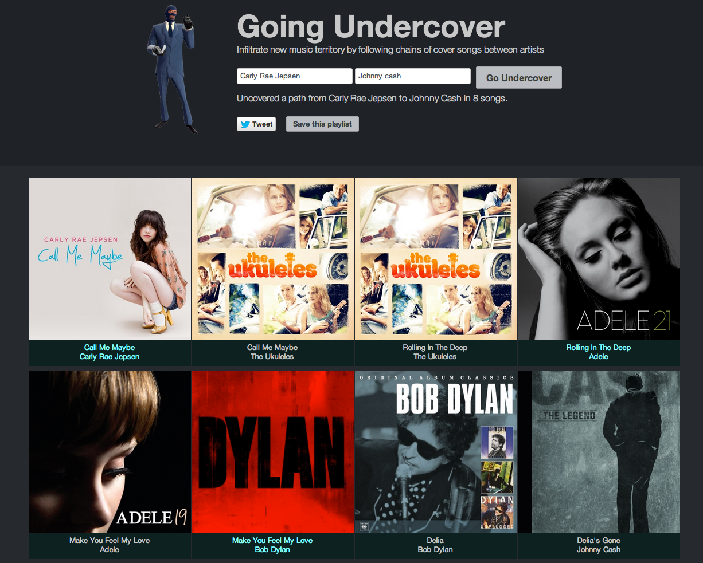
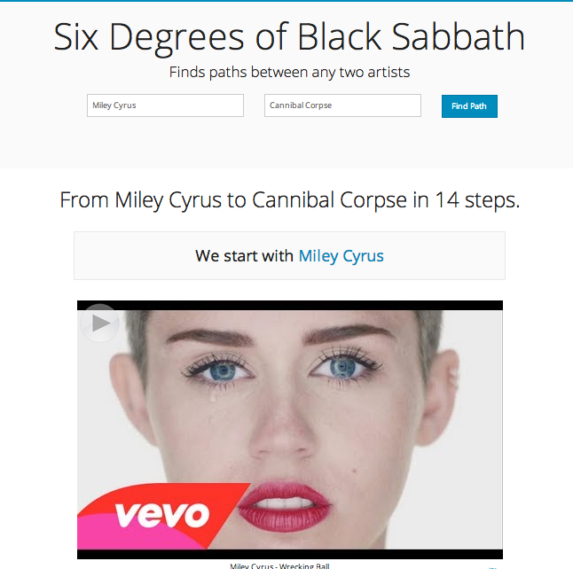

Resources for Beyond the Play button
Beyond the Play Button
The Future of Listening
35 years after the first Sony Walkman shipped, today's music player still has essentially the same set of controls as that original portable music player. Even though today's music player might have a million times more music than the cassette player, the interface to all of that music has changed very little.


In this talk we explore new ways that a music listener can interact with their music. First we explore the near future where your music player knows so much about you, your music taste and your current context that it plays the right music for you all the time. No UI is needed.

Next, we explore a future where music listening is no longer a passive experience. Instead of just pressing the play button and passively listening you will be able to jump in and interact with the music. Make your favorite song last forever, add your favorite drummer to that Adele track or unleash your inner Skrillex and take total control of your favorite track.
Supporting Info
I've covered many of the topics in the talk more deeply in these blog posts.- The Zero Button Music Player
- Gender Specific Listening
- Exploring age-specific preferences in listening
- Exploring regional listening preferences
- Favorite artists vs distinctive artists by state
- Anti-preferences in regional listening
- Visualizing the Structure of Pop Music
- Using the wisdom of the crowds to build better playlists
- Exploring playlist gender biases
Interactive Examples
Here are some experimental interfaces that allow a music listener to interact with their music.Infinite Jukebox
For when your favorite song just isn't long enough
 This web app lets you upload a favorite MP3
and will then generate a never-ending and ever changing version of the song.
Infinite Jukebox uses the Echo Nest analyzer to break the song into beats. It plays the song
beat by beat, but at every beat there's a chance that it will jump to a different part of song
that happens to sound very similar to the current beat. For beat similarity the uses pitch,
timbre, loudness, duration and the position of the beat within a bar. There's a nifty
visualization that shows all the possible transitions that can occur at any beat. Built at Music
Hack Day Boston 2012.
This web app lets you upload a favorite MP3
and will then generate a never-ending and ever changing version of the song.
Infinite Jukebox uses the Echo Nest analyzer to break the song into beats. It plays the song
beat by beat, but at every beat there's a chance that it will jump to a different part of song
that happens to sound very similar to the current beat. For beat similarity the uses pitch,
timbre, loudness, duration and the position of the beat within a bar. There's a nifty
visualization that shows all the possible transitions that can occur at any beat. Built at Music
Hack Day Boston 2012.
The Bonhamizer
Some songs just need a little bit of Bonzo
 This app will take a track and re-render it as if John Bonham of Led Zepplin was the drummer.
This app works by cutting songs up into beats and tatums, and aligning the beats to John Bonham Drum patterns.
This app will take a track and re-render it as if John Bonham of Led Zepplin was the drummer.
This app works by cutting songs up into beats and tatums, and aligning the beats to John Bonham Drum patterns.
Ellie Goulding's Burn
Lots of flying cubes!
 A dynamic visualization of the Ellie Goulding song, syncrhonized with The Echo Nest
data.
A dynamic visualization of the Ellie Goulding song, syncrhonized with The Echo Nest
data.
Girl Talk in a Box
Don't just play your music, play with your music

Girl Talk in a Box lets you interact with your favorite song. You can speed it up, slow it down, skip beats, play it backwards, beat by beat. You can make it swing. You can make breaks and drops. You can upload your own song or select a song from the gallery. The Echo Nest analyzer is used to break the song into beats and tatums that are displayed as colored tiles that you can interact with. Built at MIDEM Music Hack Day 2013.
Roadtrip Mixtape
Create a mixtape of local artists for your roadtrip

Roadtrip Mixtape is an application that you can use to create road trip playlists. Type in the name of your starting and ending points, and the application will create a playlist of music by artists that from the area you are traveling through. Drive through Boston you might hear Aerosmith or Donna Summer. Drive through New Orleans and you might hear Lil Wayne or Dr. John. The application uses the Echo Nest API to get the artist location data for thousands of artists.
The 3D Music Maze
Music exploration as a game

The 3D Music Maze is a WebGL app that lets you wander around a Castle Wolfenstein style maze and sample music and enjoy the album art. If you wander through the maze long enough you may encounter an embedded game called 'Save Justin Bieber from the Death Metal'. This app is an experiment in using alternative interfaces for music exploration and discovery. I uses The Echo Nest artist similarity and playlisting APIs to build logical clusters of artists and songs. It uses the 7Digital media (album art and 30 second samples) and three.js for all the 3D goodness.
Boil the Frog
Create seamless genre-transitioning playlists between artists
 Boil the Frog lets you create a playlist of songs that gradually takes you from one music style to
another. It's like the proverbial frog in the pot of water. If you heat up the pot slowly enough,
the frog will never notice that he's being made into a stew and jump out of the pot. With a Boil
the frog playlist you can do the same, but with music. You can generate a playlist that will take
the listener from one style of music to the other, without the listener ever noticing that they
are being made into a stew.
Boil the Frog lets you create a playlist of songs that gradually takes you from one music style to
another. It's like the proverbial frog in the pot of water. If you heat up the pot slowly enough,
the frog will never notice that he's being made into a stew and jump out of the pot. With a Boil
the frog playlist you can do the same, but with music. You can generate a playlist that will take
the listener from one style of music to the other, without the listener ever noticing that they
are being made into a stew.
Going Undercover
Infiltrate new music territory by following chains of cover songs between artists
Going Undercover lets you create a playlist of songs that takes you from one artist to another by following cover song chains. Type in the name of a couple of artists, and if we can find connections between them, we will generate a playlist that connects the two artists via cover songs. If you don't like a particular song, you can bypass it by clicking the bypass button. If you like a playlist, you can save it to your set of Rdio playlists.
Six Degrees of Black Sabbath
Six degrees of Kevin Bacon for music
Six Degrees of Black Sabbath is a web app that lets you find connections between artists based on a wide range of artist relations. It is like The Oracle of Bacon for music.
Music Popcorn
Explore the vast genre space

Explore hundreds of genres with a dynamic visualization of the genre space.